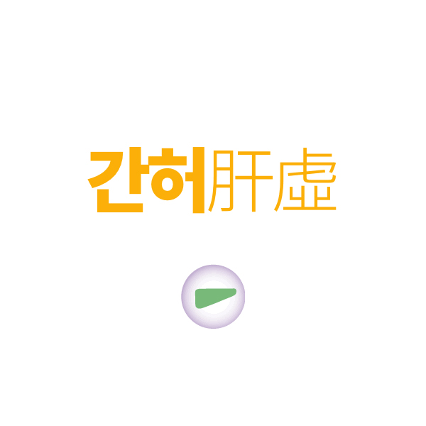
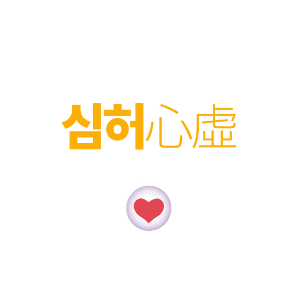
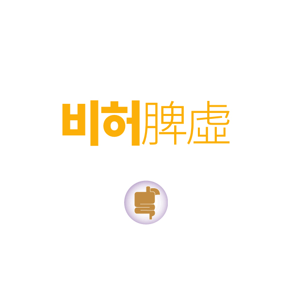
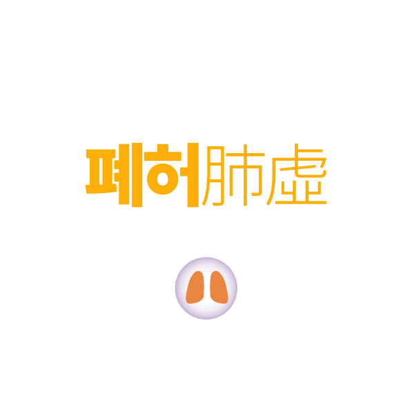
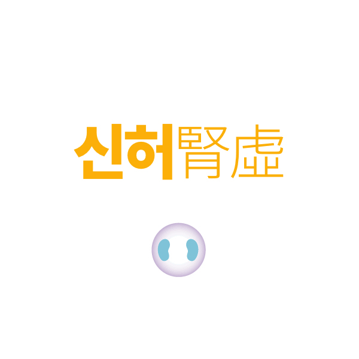
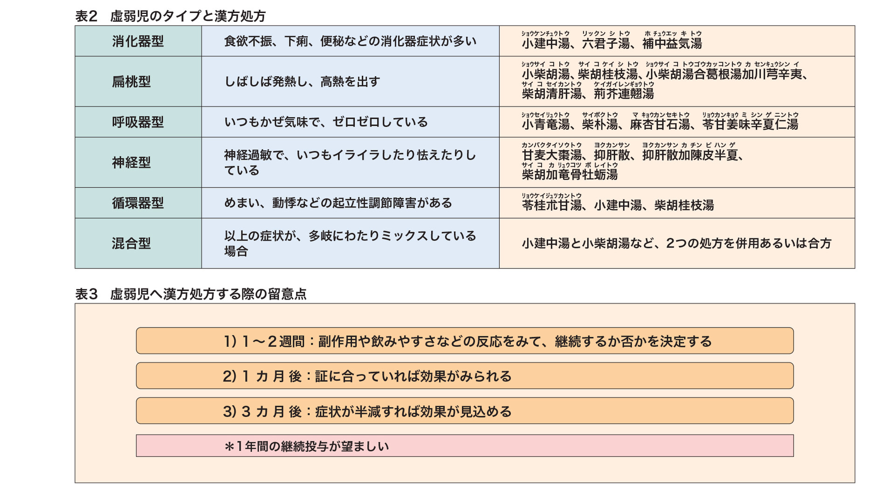

이 페이지에서 살펴볼 내용
보약으로 허약체질을 개선합니다
놓치기 쉬운 사소한 생활습관, 학교(유치원, 어린이집 등)생활 등을 종합적으로 고려하여 약해진 부분의 균형을 채워나갑니다.
"자주 감기에 걸려요
가끔 배가 아프다거나, 머리가 아프다고 말해요"
아이가 어딘가 모르게 자주 아프다면 성장과 발달에 영향을 줄지도 모릅니다.
특별히 원인이 격렬하지 않더라도 다음과 같은 증상/상태가 있는 아이를 일반적으로 허약아라고 말합니다만 정확한 의학적 정의는 없기 때문에 방치하기도 쉽습니다.
명확한 것은 대부분허약한 아이는 성장과 발달부진으로 이어진다는 것입니다.
흔히 말하는 허약아는
- 병에 걸리기 쉬우며, 치료가 더딥니다.
- 쉽게 피로를 느낍니다.
- 신체의 성장발육이 느립니다.
- 안색이 좋지 않거나 빈혈 경향이 있습니다.
- 알러지 증상이 반복됩니다.
해온한의원 소아 허약체질클리닉은 전통적인 망문문절望聞問切을 현대화된 진단기기를 바탕으로 세심하고 따뜻하게 관찰하는것부터 시작합니다.
처음 오시면 시간이 많이 소요될 수 있습니다만 꼭 필요한 진단검사가 함께 하기 떄문입니다.
종합적으로 아이의 심리상태 하나까지 놓치지 않으려는 저희의 진심과 노력가 함께 한다면 아이도 더 건강해지지 않을까 생각해봅니다.
허약아의 유형은 아래의 다섯가지 유형으로 크게 구분합니다.

I 간계허약아
간-근육골격 기능계의 허약아/ 정서 신경계의 허약아
과도한 스트레스와 정서적 긴장이 잦은 경우
A. 근육발달부족, 말초신경기능저하, 운동기능부족
B. 초조, 과잉행동, 집중력저하, 야제, 심리조절장애
주로 수면불량, 강박, 불안초조, 과잉행동, 집중력저하, 화를 잘 내거나 적응조절능력이 부족
시력저하(근시, 발달장애), 복통 및 두통(기능성)이 나타납니다.

I 심계허약아
심 - 신경 / 순환기능계의 허약아
심리적으로 안정이 되지 못하거나 순환기능이 약한 경우
A. 빈혈(어지럼), 순환장애, 통증, 이유없는 저림이 주로 나타나는 유형
B. 불안, 두근거림, 어지럼, 건망증, 수족냉이 나타나는 유형
두근거림, 식은땀, 가슴답답함(한숨), 수족냉, 불면, 잦은 꿈, 야제, 어지럼, 건망증 등이 함께 나타납니다.

I 비계허약아
식욕 부진 및 소화기능계의 허약아
영양을 흡수하고 공급하는 기능, 기혈수 분배기능에 문제가 있는 경우로 가장 흔합니다.
A. 식욕부진, 복통, 체중저하 등 성장부진이 주가 되는 유형
B. 비만, 영양과잉, 소화불량, 무분별한 식습관으로 인한 여러가지 증상이 나타나는 유형
주로 식욕부진, 잦은 복통과 소화불량, 복부팽만감을 호소하는 경우가 많습니다.
소화불량, 복통, 변비, 설사, 마르고 여윔, 안색불량, 잦은 낮잠 또는 대변의 이상도 많고 배가 쉽게 불러 오른다고 호소하는 경우도 많습니다. 그 결과 쉽게 피로를 느끼며 힘이 없어하고, 체중이 잘 늘지 않습니다.
체지방과다 또는 비만유형인 경우에는 잦은 피부질환(두드러기, 아토피), 잦은 염증질환, 감염성질환, 성조숙증(가성)으로 이어지며 비만은 최대한 조기에 잡아주어야 하는 유형입니다.

I 폐계허약아
폐-면역 기능계의 허약
면역기능, 면역조절기능, 방어기능에 문제가 있는 경우
A. 잦은 감염(감기, 독감, 중이염 등) 주로 나타나는 유형
B. 알러지(비염, 천식, 아토피, 두드러기 등)가 주가 되는 유형
잦은 감기, 합병증과 후유증, 호흡기 감염, 피부 질환이 있습니다. 알러지(비염, 천식, 아토피), 식은땀, 기침, 콧물, 가래 등이 나타납니다.

I 신계허약아
신 - 성장 조절 기능계의 허약
유전적인 인자, 성장, 발육에 문제가 있는 경우
A. 성장부진 + 요통, 두통, 경부통증, 척추측만 등이 주로 나타나는 유형
B. 성장장애 + 증상은 없지만 발육 및 발달이 현저하게 느린 경우
기초체력 허약, 발육부진 (전반적인 발달, 성장장애), 척추측만, 수분대사(방광-신장)의 이상, 야뇨증, 골격왜소, 발달장애 등
I 해외에서도 허약 체질개선에 한약을 활용합니다.
옆나라 일본은 한의사제도가 없습니다.
다만, 의과대학을 마친 후 '한방전문의/인정의'수련을 통해 한방전문의가 존재합니다. 또한 일반 의사도 허약체질 아이들에게 한약을 처방합니다.
일상 진료에서 약 90% 정도의 의사가 한약을 처방하는 것으로 알려져 있으며 다음 도표는 일본에서 실제로 한약을 처방하는 예시입니다.

이 안내는 건강에 대한 이해를 돕는 참고 정보입니다. 증상과 질환에 대한 정확한 판단은 의료진의 진료가 필요합니다.